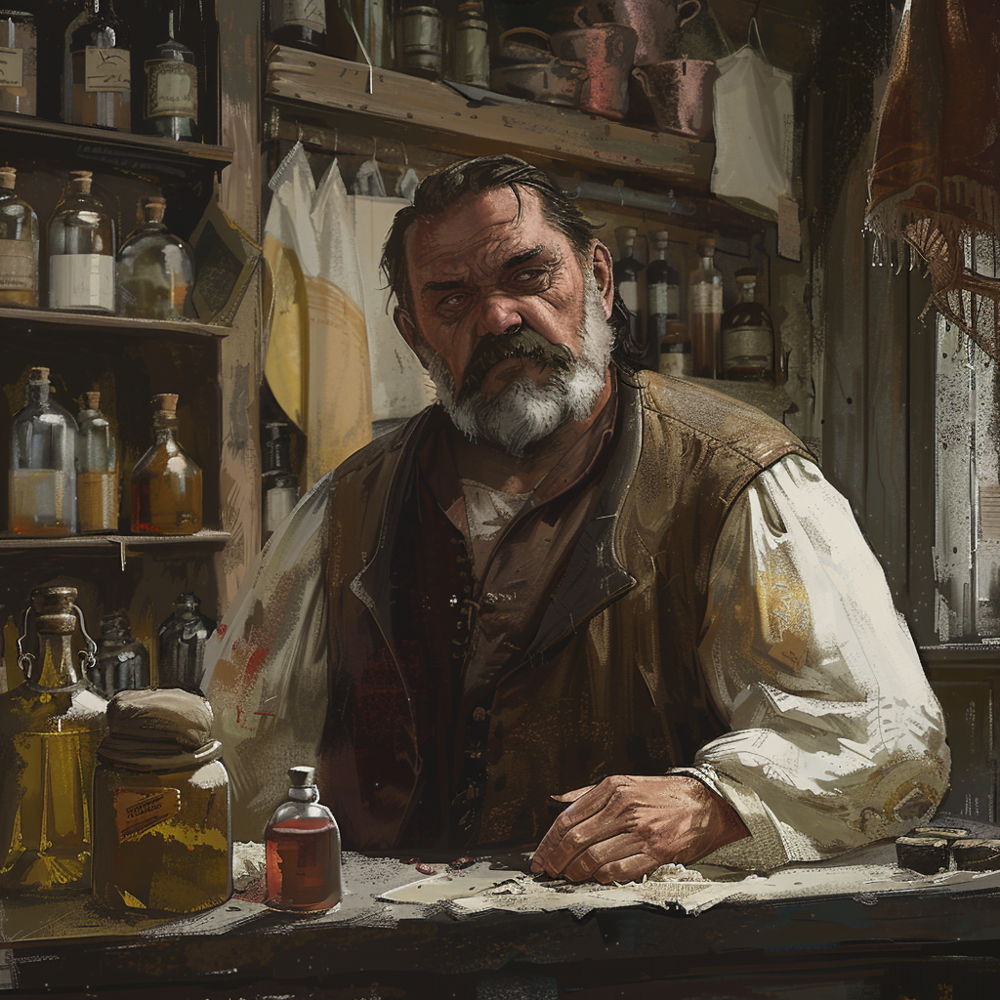

|  |
BlinskyIl est difficile de ne pas se souvenir de Blinsky, avec ses habits colorés et son large sourrire. Il est l’étrange et excentrique propriétaire de la boutique « Les jouets de Blinsky » dans la ville de Vallaki. Sa boutique est un lieu aussi unique que lui, des jouets et friandises se mêle à des objets magiques. On ne peut s’empêcher de se demander si Blinsky comprends vraiment le pouvoir qu’il manipule. Il nous a même confié être capable de créer des parchemins de sort et des objets magiques, bien sûr le prix est elevé. Ses objets magiques pourraient s’avérer être utile contre nos ennemis en Barovie. |